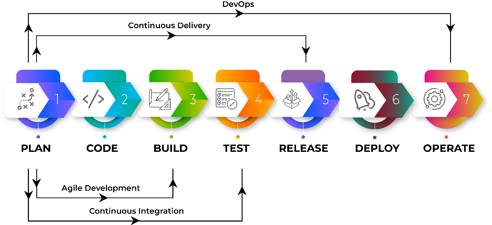
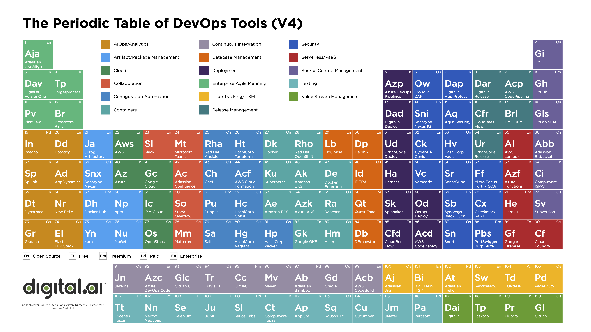

<div class="flexbox-parent container">
  <div layout="row" layout-align="center center">

    <h1 class="content-header">Other/Random Stuff</h1>

    <mat-accordion>
      <mat-expansion-panel>
        <mat-expansion-panel-header>
          <mat-panel-title>
            Agile / CI / CD / DevOps
          </mat-panel-title>
        </mat-expansion-panel-header>
        
        <p>
          <a mat-raised-button class="mat-primary" href="../../assets/images/agile-vs-ci-vs-cd-vs-devops.png" target="_blank">
            <fa-icon [icon]="['fas', 'download']"></fa-icon>&nbsp;Download</a>
        </p>
      </mat-expansion-panel>
      <mat-expansion-panel>
        <mat-expansion-panel-header>
          <mat-panel-title>
            Periodic Table of DevOps (V4)
          </mat-panel-title>
          <mat-panel-description>
            From XebiaLabs, now a part of Digital.ai
          </mat-panel-description>
        </mat-expansion-panel-header>
        <p>The Periodic Table of DevOps Tools V4 reflects the votes of over 18,000 DevOps practitioners and serves
          as the industry’s go-to reference for identifying best-in-class products across the software
          delivery lifecycle.<br/><br/>
        </p>
        
        <a mat-raised-button class="mat-primary" href="../../assets/images/devops-periodic-table-v4.png" target="_blank">
          <fa-icon [icon]="['fas', 'download']"></fa-icon>&nbsp;Download</a>
      </mat-expansion-panel>
    </mat-accordion>
  </div>
</div>
